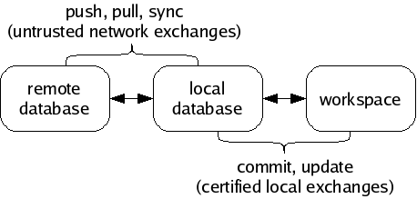
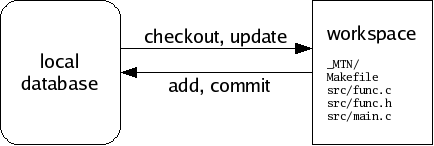

Next: Forks and merges, Previous: Certificates, Up: Concepts [Contents][Index]
Monotone moves information in and out of four different types of storage:
The keystore is a directory .monotone/keys in your home directory which contains copies of all your private keys. Each key is stored in a file whose name is the key identifier with some characters converted to underscores. When you use a key to sign a cert, the public half of that key is copied into your local database along with the cert.
All information passes through your local database, en route to some other destination. For example, when changes are made in a workspace, you may save those changes to your database, and later you may synchronize your database with someone else’s. Monotone will not move information directly between a workspace and a remote database, or between workspaces. Your local database is always the “switching point” for communication.

A workspace is a tree of files in your file system, arranged according to the list of file paths and IDs in a particular manifest. A special directory called _MTN exists in the root of any workspace. Monotone keeps some special files in the _MTN directory, in order to track changes you make to your workspace. If you ever want to know if a directory is a monotone workspace, just look for this _MTN directory.
Aside from the special _MTN directory, a workspace is just a normal tree of files. You can directly edit the files in a workspace using a plain text editor or other program; monotone will automatically notice when you make this kind of change, and include them in the next commit.
If you add files, remove files, or move files within your workspace, you must tell monotone explicitly what you are doing, as these actions cannot be deduced. Monotone stores these changes in _MTN/revision; they will be part of the next commit.
If you do not yet have a workspace, you can check out a workspace from a database, or construct one from scratch and add it into a database. As you work, you will occasionally commit changes you have made in a workspace to a database, and update a workspace to receive changes that have arrived in a database. Committing and updating take place purely between a database and a workspace; the network is not involved.

A database is a single, regular file. You can copy or back it up using standard methods. Typically you keep a database in your home directory. Databases are portable between different machine types. You can have multiple databases and divide your work between them, or keep everything in a single database if you prefer. You can dump portions of your database out as text, and read them back into other databases, or send them to your friends. Underneath, databases are accessed using a standard, robust data manager, which makes using even very large databases efficient. In dire emergencies, you can directly examine and manipulate a database using a simple SQL interface.
A database contains many files, manifests, revisions, and certificates, some of which are not immediately of interest, some of which may be unwanted or even false. It is a collection of information received from network servers, workspaces, and other databases. You can inspect and modify your databases without affecting your workspaces, and vice-versa.
Monotone knows how to exchange information in your database with other remote databases, using an interactive protocol called netsync. It supports three modes of exchange: pushing, pulling, and synchronizing. A pull operation copies data from a remote database to your local database. A push operation copies data from your local database to a remote database. A sync operation copies data both directions. In each case, only the data missing from the destination is copied. The netsync protocol calculates the data to send “on the fly” by exchanging partial hash values of each database.

In general, work flow with monotone involves 3 distinct stages:
The last stage of workflow is worth clarifying: monotone does not blindly apply all changes it receives from a remote database to your workspace. Doing so would be very dangerous, because remote databases are not always trustworthy systems. Rather, monotone evaluates the certificates it has received along with the changes, and decides which particular changes are safe and desirable to apply to your workspace.
You can always adjust the criteria monotone uses to judge the trustworthiness and desirability of changes in your database. But keep in mind that it always uses some criteria; receiving changes from a remote server is a different activity than applying changes to a workspace. Sometimes you may receive changes which monotone judges to be untrusted or bad; such changes may stay in your database but will not be applied to your workspace.
Remote databases, in other words, are just untrusted “buckets” of data, which you can trade with promiscuously. There is no trust implied in communication.
Next: Forks and merges, Previous: Certificates, Up: Concepts [Contents][Index]